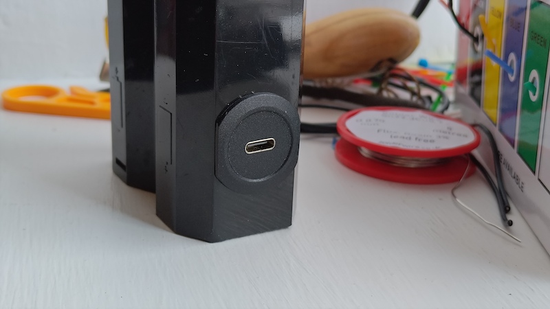

Ever Ready Bike Lights

Modernising Ever Ready/Exide bike lights from the 70s/80s. These lights were a feature of any Gen-X-ers childhood, they used two large 'D cell' R20 batteries and a very dim PR527 0.42 amp bulb which wasn't much good for actually being seen.
My plan is to reuse the case, reflector, and lens, and add a modern LED ring, driver board, LiPo battery, USB surface mount charge port, and a switch.
